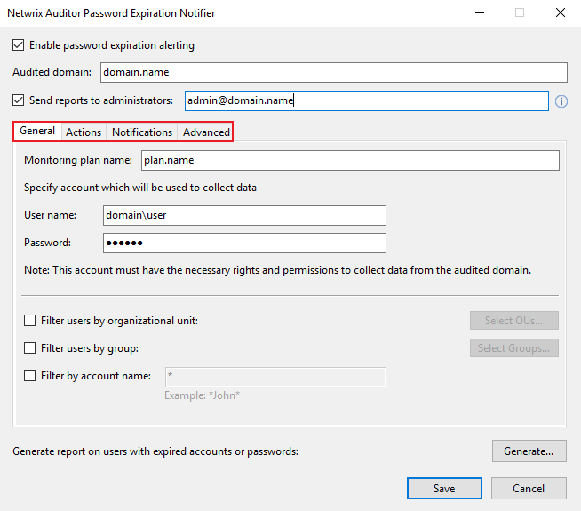
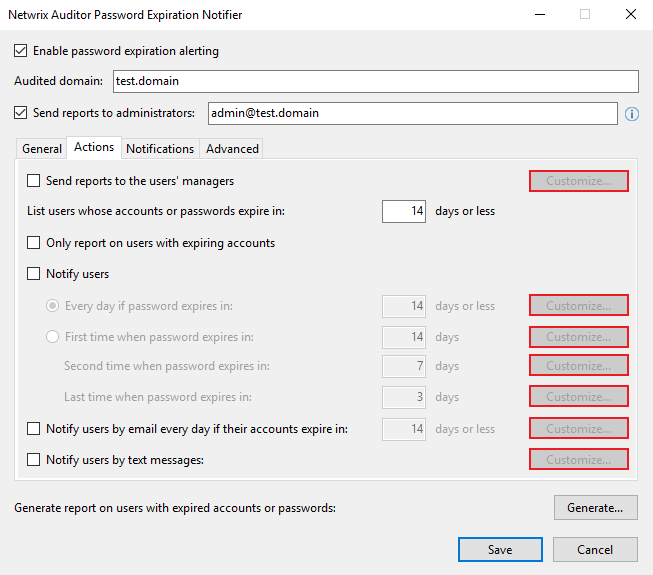

Question
How to migrate Netwrix Password Expiration Notifier to a different server?
Answer
In Netwrix Auditor versions 9.0 and newer, Password Expiration Notifier is installed
alongside the Netwrix Auditor installation.
- Install Netwrix Auditor on a new server.
-
Copy the following data from the old server to the new server:
- Templates folder from "C:\Program Files (x86)\Netwrix Auditor\Password Expiration Alerting\Templates".
-
Screenshot all four tabs of the Password Expiration Notifier interface for
configuration details.

- Reconfigure Password Expiration Notifier according to the screenshots you captured.
- Apply your Netwrix Auditor License to the new instance of Netwrix Auditor.
NOTE
Message templates customized via Password Expiration Notifier UI should be transferred
manually — make sure to copy the contents of Actions tab reports highlighted in the
screenshot.
